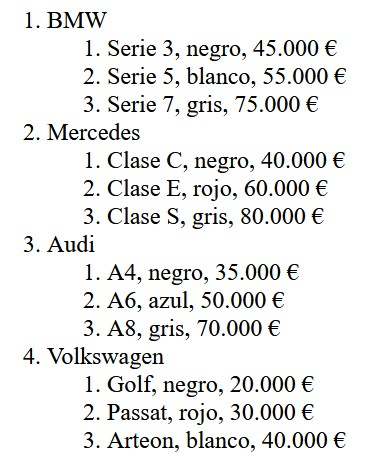

1. Crea el código HTML y jQuery de un textarea y un contador de caracteres. Cuando el usuario escriba en el textarea se actualizará un contador del número de caracteres que tiene el textarea. Ese contador se mostrará al usuario justo debajo del textarea.
2. Crea el código jQuery para que se muestre por consola la posición del scroll cuando se haga scroll vertical.
3. Crea el código jQuery que ponga la clase sinalt a todas las imágenes que no tengan el atributo alt o lo tengan vacío.
4. Crea el código jQuery a partir del siguiente HTML/CSS, de forma que cuando se haga clic en alguno de los ítems, a ese ítem se le incluya la clase active y se le quite al que lo tuviera antes.
<style>
#navbar {
display: flex;
background-color: black;
}
.nav-item {
padding: 10px;
color: white;
text-decoration: none;
}
a.nav-item:hover,
a.active {
background-color: red;
}
</style>
<nav id="navbar">
<a class="nav-item active" href="#">Inicio</a>
<a class="nav-item" href="#">Nosotros</a>
<a class="nav-item" href="#">Servicios</a>
<a class="nav-item" href="#">Contacto</a>
</nav>5. A partir del siguiente HTML, crea el código jQuery que haga que al pulsar el botón se habilite el input.
<button id="my-button">Botón</button>
<input type="text" id="my-input" disabled>6. A partir del siguiente formulario, crea el código jQuery para que el checkbox habilite/deshabilite el botón Enviar.
<form>
<label for="checkbox"> Selecciona para habilitar el botón:</label>
<input type="checkbox" id="checkbox">
<br>
<button id="submit-button" disabled>Enviar</button>
</form>7. A partir del siguiente HTML en el que tenemos 3 radiobuttons con opciones de marcas de coche, cuando el usuario modifique la opción seleccionada aparecerá un mensaje indicando la opción seleccionada.
<input type="radio" id="audi" name="brand" value="Audi">
<label for="audi">Audi</label>
<input type="radio" id="mercedes" name="brand" value="Mercedes">
<label for="mercedes">Mercedes</label>
<input type="radio" id="hyundai" name="brand" value="Hyundai">
<label for="hyundai">Hyundai</label>
<p id="message"></p>8. A partir del siguiente HTML en el que tenemos 3 checkboxes con marcas de coche, cuando el usuario marque o desmarque un checkbox aparecerá un mensaje indicando la opción u opciones seleccionadas. Si no ha seleccionado ninguna, también saldrá el mensaje indicándolo.
<input type="checkbox" id="audi" name="brand" value="Audi">
<label for="audi">Audi</label>
<input type="checkbox" id="mercedes" name="brand" value="Mercedes">
<label for="mercedes">Mercedes</label>
<input type="checkbox" id="hyundai" name="brand" value="Hyundai">
<label for="hyundai">Hyundai</label>
<p id="message"></p>9. Crea un código jQuery en el que se muestre por consola la diferencia entre los métodos outerWidth(), innerWidth() y width() a partir del HTML/CSS siguiente:
<style>
#ejemplo {
width: 200px;
padding: 20px;
border: 10px solid black;
}
</style>
<div id="ejemplo"></div>10. Crea el código jQuery que compruebe si los dos campos de texto del siguiente formulario de login están vacíos. Proporciona 2 soluciones:
10.1. Si alguno lo está, mostrará un mensaje de alerta debajo del formulario con un efecto slide.
10.2. Elimina el div#alert del HTML y modifica la solución anterior para que sea jQuery quien inserte el div en el DOM.
<form id="login-form">
<input type="text" name="username" id="username" placeholder="Nombre de Usuario">
<input type="password" name="password" id="password" placeholder="Contraseña">
<input type="submit" id="submit-btn" value="Iniciar Sesión">
<div id="alert"></div>
</form>11. Crea el código jQuery que inserte dinámicamente en el div con #resultado un mensaje con la opción seleccionada por el usuario en el siguiente select.
<select id="brands">
<option value="audi">Audi</option>
<option value="bmw">BMW</option>
<option value="mercedes">Mercedes</option>
<option value="hyundai">Hyundai</option>
</select>
<div id="resultado"></div>12. Dado el siguiente formulario de login, los datos de usuario y contraseña se enviarán por GET asíncronamente con $.ajax a una página llamada login.json. Esa página devolverá simplemente un JSON con los parámetros error y error_msj. Si el parámetro error recibido es 0, inserta dinámicamente un mensaje debajo del formulario indicando que el inicio de sesión ha sido correcto. Si es distinto de 0 el mensaje debe ser el que se haya recibido en error_msj. Diseña el código jQuery que haga esa llamada asíncrona.
Formulario:
<form id="form-login">
<label for="username">Usuario:</label>
<input type="text" id="username" name="username">
<br>
<label for="password">Contraseña:</label>
<input type="password" id="password" name="password">
<br>
<button type="submit">Iniciar sesión</button>
</form>jquery-ej-12-login.txt:
{
"error": 0,
"error_msj": ""
}13. Una llamada Ajax a nuestro servidor nos devuelve una lista de coches y modelos en formato JSON en texto plano. Crea el código jQuery para insertar dinámicamente en el div#respuesta una lista ordenada de los coches que recibimos.
Puedes utilizar cualquier herramienta web para visualizar mejor el JSON, por ejemplo jsonformatter.org.
jquery-ej-13-coches.json:
[{"marca":"BMW","coches":[{"modelo":"Serie 3","color":"Negro","precio":"45.000 €"},{"modelo":"Serie 5","color":"Blanco","precio":"55.000 €"},{"modelo":"Serie 7","color":"Gris","precio":"75.000 €"}]},{"marca":"Mercedes","coches":[{"modelo":"Clase C","color":"Negro","precio":"40.000 €"},{"modelo":"Clase E","color":"Rojo","precio":"60.000 €"},{"modelo":"Clase S","color":"Gris","precio":"80.000 €"}]},{"marca":"Audi","coches":[{"modelo":"A4","color":"Negro","precio":"35.000 €"},{"modelo":"A6","color":"Azul","precio":"50.000 €"},{"modelo":"A8","color":"Gris","precio":"70.000 €"}]},{"marca":"Volkswagen","coches":[{"modelo":"Golf","color":"Negro","precio":"20.000 €"},{"modelo":"Passat","color":"Rojo","precio":"30.000 €"},{"modelo":"Arteon","color":"Blanco","precio":"40.000 €"}]}]HTML:
<input type="button" value="Actualizar" id="refresh">
<div id="respuesta"></div>
<script>
$(document).ready(function () {
$("#refresh").click(function () {
$.ajax({
url: "jquery-ej-13-coches.json",
type: "GET",
success: function (data) {
// Inserta aquí tu código
}
});
});
});
</script>Deberías obtener algo así:
14. Dado el siguiente HTML, diseña el código jQuery para que se analice cada tecla pulsada en el input. Si es un carácter válido para números binarios se insertará. Si no lo es, no se insertará, se mostrará un mensaje de error durante 1 segundo y luego se ocultará (usa el método delay()).
<style>
#error-message {
display: none;
color: red;
}
</style>
<form>
<label for="binary-input">Introduce un número binario:</label>
<input type="text" id="binary-input" maxlength="8">
<button type="submit">Enviar</button>
</form>
<div id="error-message">Introduce sólo números binarios (0 ó 1).</div>15. Dado el siguiente HTML, cuando el usuario quiera enviar el formulario se comprobará con jQuery si hay al menos un checkbox marcado. Si no hay ninguno, se mostrará un mensaje de error. Si hay al menos uno, es enviará el formulario.
<form id="car-brands-form">
<p>Elige al menos una marca de coche:</p>
<label><input type="checkbox" name="brand" value="Toyota"> Toyota</label><br>
<label><input type="checkbox" name="brand" value="Ford"> Ford</label><br>
<label><input type="checkbox" name="brand" value="Honda"> Honda</label><br>
<label><input type="checkbox" name="brand" value="BMW"> BMW</label><br>
<label><input type="checkbox" name="brand" value="Mercedes"> Mercedes</label><br><br>
<button type="submit">Enviar</button>
</form>
<div id="error-message" style="color: red; display: none;">Selecciona al menos una marca de coche.</div>16. Dado el siguiente HTML/CSS, diseña el código jQuery para que se cargue asíncronamente con load() en el aside#res un HTML externo con resultados deportivos. Esta carga externa se producirá al cargar la página principal y posteriormente cada 5 segundos (usa setInterval). Cada vez que se produzca esta carga externa el aside hará un breve efecto de desaparecer y aparecer de nuevo para indicar al usuario la actualización. Además, si se produce un error en la carga, se mostrará en el aside un mensaje de error.
<style>
header {
background-color: lightblue;
height: 100px;
}
main {
display: grid;
grid-template-columns: 1fr minmax(200px, auto);
}
section {
background-color: lightcoral;
min-height: 200px;
}
aside#res {
background-color: lightgoldenrodyellow;
}
footer {
background-color: lightgreen;
height: 100px;
}
</style>
<header>header</header>
<main>
<section>section</section>
<aside id="res">aside</aside>
</main>
<footer>footer</footer>Como ejemplo de página de resultados puedes usar algo así:
<p>España - 0 Francia - 0</p>
<p>Alemania - 0 Holanda - 0</p>
<p>Inglaterra - 0 Italia - 0</p>